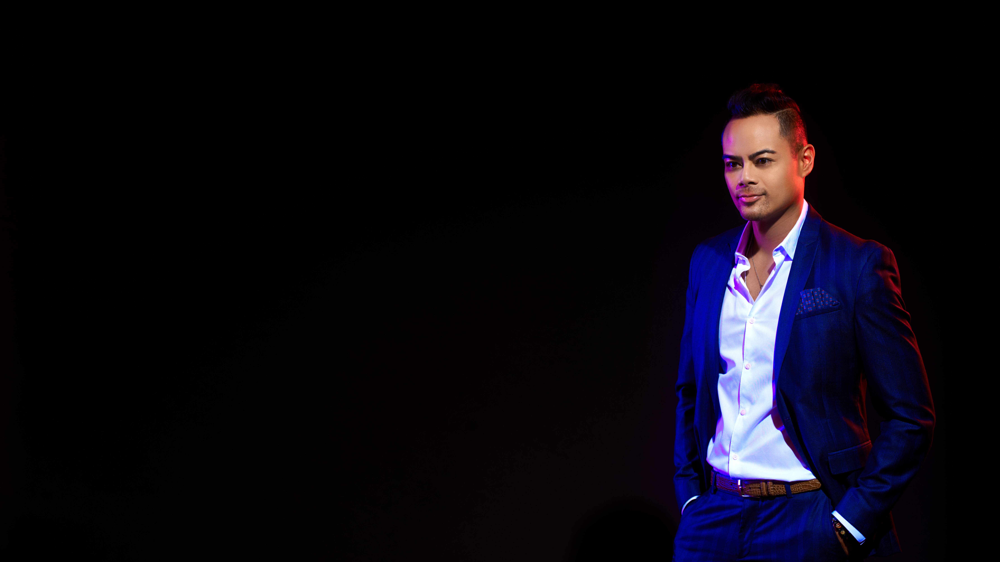

Two decades architecting intelligent systems for Fortune 500 enterprises. Innovation labs that ship production-scale platforms across finance, healthcare, media, luxury, and enterprise software.
The next decade of competitive advantage will be won by enterprises that can compress the distance between frontier AI research and shipped, governed, revenue-generating products. That compression is what Nikos and his teams build.
15+ years deploying production AI/ML to B2B and B2C audiences serving millions of users.
Operating frameworks for rapid experimentation, responsible governance, and translation of research into durable advantage.
Bridging theoretical depth with pragmatic implementation across industries and disciplines.
Strategic business acumen paired with hands-on technical expertise across product, R&D, and operations.
Advanced AI research and deep-tech expertise across disciplines and verticals — from frontier ML architecture to applied research re-envisioning human–machine modalities.
Pioneering AI-augmented design across the entire development cycle. Strategic integration of AI into creative and media workflows for luxury brands, A-list studios, and cultural institutions.
Building new AI products, platforms, and solutions while incubating and investing in high-growth startups. End-to-end commercialization, from POC to production at enterprise scale.
Institutions navigating the AI transition face questions too technical for traditional strategy firms, too consequential for generic AI tools, and too dynamic for static research reports. Faith-based, fiduciary, and mission-sensitive buyers need governed intelligence — auditable sources, versioned models, explicit uncertainty.
A hybrid intelligence company built on one evidence graph, model factory, and governance layer — combining analyst-led research, validated data models, simulation-driven decision support, and retained advisory. The first wedge is Flourish OS: a custom research platform for Bountiful Financial and aligned faith-based institutions studying how AI shapes human flourishing.
A six-layer commercial stack — public research, paid research, institutional data models, simulation tools, standards, and advisory — where every public insight points to a paid product, every product to an institutional model, every model to advisory, and every engagement back into the evidence graph.
Faith-aligned investors need defensible controversy intelligence, faith-enhanced index reporting, and a production data architecture — but the ground state is fragmented vendor pipelines, manual processes, and methodology that lives in spreadsheets. The institutional buyer wants fact sheets, exclusion summaries, and case-level evidence they can put in front of a committee.
Stand up Bountiful Intelligence — an AI lab built on a unified data spine. One Q2–Q3 program ships four interlocking streams: Unified Data Architecture v4.7 (six canonical tables, daily SFTP and quarterly rebalance pipelines, exclusion diff engine, API layer); Living Case Commercial MVP (case-centric controversy intelligence, evidence hub, watchlists and alerts, methodology center); Index Intelligence Reporting across three calc partners (S&P DJI, MerQube, LIXX) with ISIN-keyed entity resolution; and an Azure production posture for SOC 1 readiness and S&P vendor onboarding.
Every public output — fact sheet, exclusion summary, case page — traces back to the canonical schema; the methodology knowledge graph is the proprietary moat, exposing pre-rendered reasons rather than raw rules. A bench-to-paid-pilot motion converts beta validation into ARR.
DirecTV had been losing customers for several years and could not identify the underlying drivers from existing structured data. They engaged Lyrical to mine online customer conversations and surface the real signal.
We analyzed millions of churn-related conversations to isolate specific interactions where former customers explained why they left. Two-thirds of churn traced to signal loss during weather events disrupting football telecasts.
A retention plan tightly mapped to those interactions — and a continuing methodology to surface new churn drivers as they emerged.
JetBlue needed to translate fragmented customer signal — across gates, terminals, in-flight experience, baggage, and crew interactions — into a concrete, prioritized brand-experience program above and below the wing.
AI-driven customer intelligence ranked opportunities across the full journey: gate comms, TSA flow at SFO, signage, AV, seasonal snacks, delay kits, and crew behaviors — alongside spare-parts positioning, scheduling, and baggage operational changes.
A redesigned Long Beach terminal and new customer-centric executive metrics aligned the organization around a unified experience standard.
Legacy data science and ML through advanced LLM architecture, multi-modal systems, and generative creation.
Agentic orchestration of business, product creation, research intelligence, workflow automation, predictive modeling.
Competitive, sentiment, controversy, and perception analytics across an integrated media ecosystem.
Proprietary IP and creative production with world-renowned research fellows, AI artists, and practitioners.
AI integrated into creative and media workflows — concept to final production — for luxury and cultural institutions.
Ethics research, policy development, responsible implementation in partnership with a global think-tank network.
From on-prem data center through large-scale multi-cloud (AWS / GCP / Azure) deployments at organization scale.
Global consultancy and strategic deployments that have generated $500M+ in measured business impact.
AI startup incubator and venture arm. Advisory across early-stage, M&A, and late-stage acquisition.
My research explores emergent intelligence at the convergence of AI, quantum computing, cognitive science, economics, and planetary-scale computation — bridging theoretical depth with pragmatic implementation.
Used as a reference text by enterprise innovation teams designing next-generation customer experiences.
Presented as part of the Diplomatic Courier delegation — the architecture of a Republic of Intelligences, drawing on Heidegger and Bratton.
Operating experience through major adtech consolidation — a working view of how AI assets are valued, integrated, accelerated, or stranded.